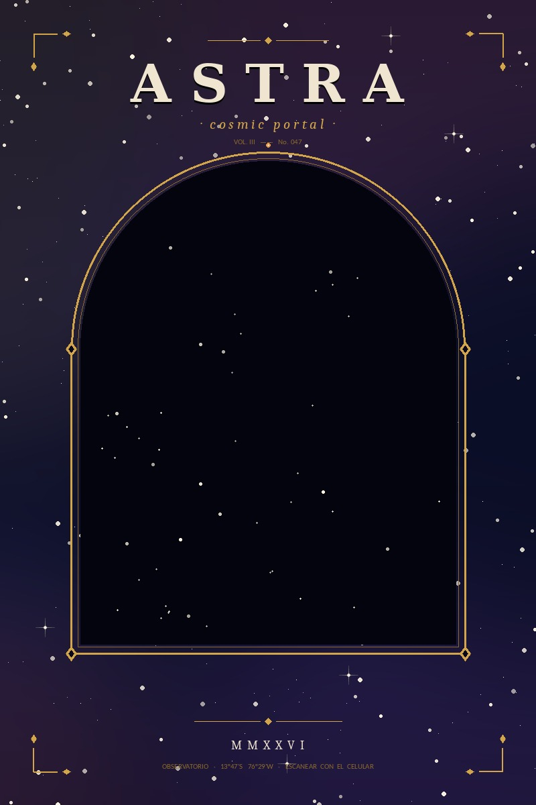
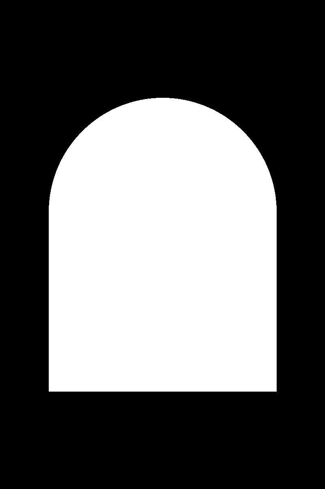
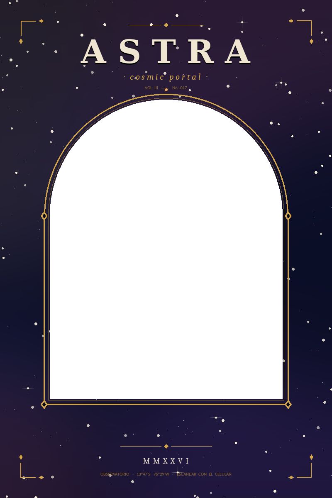

Esta experiencia está pensada para tu celular. Abre la página desde tu móvil y apunta la cámara hacia la imagen marcador para ver el video con efecto de profundidad.

Vas a necesitar permitir el acceso a la cámara. Apunta luego hacia la imagen marcador.

